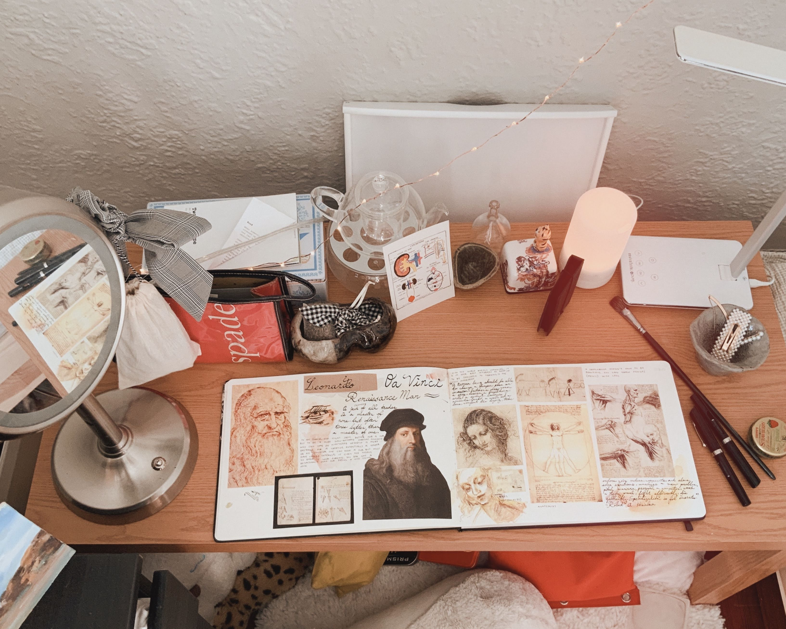

I am currently a senior in industrial design at RISD. Outside of design, I enjoy drawing comics, editing videos, weight lifting, and playing Old School Runescape. Usually, you can find me occupied by a random topic (I have been researching a lot into Jungian cognitive functions recently). I am always on the path of self improvement, and most recently I am running 6ks and quitting caffeine. I enjoy watching a variety of shows, some including The Office, Silicon Valley and Rick and Morty.


This is my official desk, but I don't like to work in one place (You can find me in cafes and on the couch, etc.)
